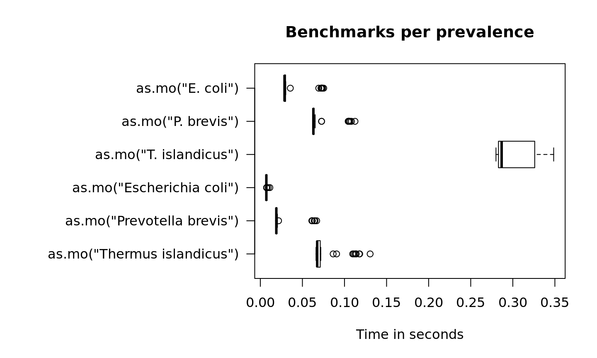

benchmarks.RmdOne of the most important features of this package is the complete microbial taxonomic database, supplied by the Catalogue of Life. We created a function as.mo() that transforms any user input value to a valid microbial ID by using AI (Artificial Intelligence) combined with the taxonomic tree of Catalogue of Life.
Using the microbenchmark package, we can review the calculation performance of this function. Its function microbenchmark() runs different input expressions independently of each other and measures their time-to-result.
In the next test, we try to ‘coerce’ different input values for Staphylococcus aureus. The actual result is the same every time: it returns its MO code B_STPHY_AUR (B stands for Bacteria, the taxonomic kingdom).
But the calculation time differs a lot. Here, the AI effect can be reviewed best:
S.aureus <- microbenchmark(as.mo("sau"),
as.mo("stau"),
as.mo("staaur"),
as.mo("S. aureus"),
as.mo("S. aureus"),
as.mo("STAAUR"),
as.mo("Staphylococcus aureus"),
times = 10)
print(S.aureus, unit = "ms", signif = 3)
#> Unit: milliseconds
#> expr min lq mean median uq max neval
#> as.mo("sau") 12.7 12.7 22.7 13.2 13.5 71.1 10
#> as.mo("stau") 87.6 87.8 90.2 87.9 90.6 104.0 10
#> as.mo("staaur") 12.6 12.6 12.8 12.7 12.8 13.6 10
#> as.mo("S. aureus") 24.0 24.2 32.0 24.5 25.4 63.2 10
#> as.mo("S. aureus") 24.1 24.1 29.3 24.2 24.6 74.0 10
#> as.mo("STAAUR") 12.6 12.7 16.6 12.7 12.8 51.5 10
#> as.mo("Staphylococcus aureus") 13.5 13.5 17.9 13.6 14.5 54.5 10In the table above, all measurements are shown in milliseconds (thousands of seconds). A value of 10 milliseconds means it can determine 100 input values per second. It case of 50 milliseconds, this is only 20 input values per second. The second input is the only one that has to be looked up thoroughly. All the others are known codes (the first is a WHONET code) or common laboratory codes, or common full organism names like the last one.
To achieve this speed, the as.mo function also takes into account the prevalence of human pathogenic microorganisms. The downside is of course that less prevalent microorganisms will be determined less fast. See this example for the ID of Mycoplasma leonicaptivi (B_MYCPL_LEO), a bug probably never found before in humans:
M.leonicaptivi <- microbenchmark(as.mo("myle"),
as.mo("mycleo"),
as.mo("M. leonicaptivi"),
as.mo("M. leonicaptivi"),
as.mo("MYCLEO"),
as.mo("Mycoplasma leonicaptivi"),
times = 10)
print(M.leonicaptivi, unit = "ms", signif = 3)
#> Unit: milliseconds
#> expr min lq mean median uq max neval
#> as.mo("myle") 134 135 144 135 138 184 10
#> as.mo("mycleo") 445 458 479 487 493 500 10
#> as.mo("M. leonicaptivi") 204 207 224 214 245 248 10
#> as.mo("M. leonicaptivi") 205 206 223 208 246 250 10
#> as.mo("MYCLEO") 446 448 480 486 492 529 10
#> as.mo("Mycoplasma leonicaptivi") 146 149 170 169 191 193 10That takes 9.1 times as much time on average! A value of 100 milliseconds means it can only determine ~10 different input values per second. We can conclude that looking up arbitrary codes of less prevalent microorganisms is the worst way to go, in terms of calculation performance.
In the figure below, we compare Escherichia coli (which is very common) with Prevotella brevis (which is moderately common) and with Mycoplasma leonicaptivi (which is very uncommon):
par(mar = c(5, 16, 4, 2)) # set more space for left margin text (16)
boxplot(microbenchmark(as.mo("M. leonicaptivi"),
as.mo("Mycoplasma leonicaptivi"),
as.mo("P. brevis"),
as.mo("Prevotella brevis"),
as.mo("E. coli"),
as.mo("Escherichia coli"),
times = 50),
horizontal = TRUE, las = 1, unit = "s", log = FALSE,
xlab = "", ylab = "Time in seconds",
main = "Benchmarks per prevalence")
Uncommon microorganisms take a lot more time than common microorganisms. To relieve this pitfall and further improve performance, two important calculations take almost no time at all: repetitive results and already precalculated results.
Repetitive results mean that unique values are present more than once. Unique values will only be calculated once by as.mo(). We will use mo_fullname() for this test - a helper function that returns the full microbial name (genus, species and possibly subspecies) which uses as.mo() internally.
library(dplyr)
# take 500,000 random MO codes from the septic_patients data set
x = septic_patients %>%
sample_n(500000, replace = TRUE) %>%
pull(mo)
# got the right length?
length(x)
#> [1] 500000
# and how many unique values do we have?
n_distinct(x)
#> [1] 95
# now let's see:
run_it <- microbenchmark(mo_fullname(x),
times = 10)
#> [1] "is any"
#> [1] "is any"
#> [1] "is any"
#> [1] "is any"
#> [1] "is any"
#> [1] "is any"
#> [1] "is any"
#> [1] "is any"
#> [1] "is any"
#> [1] "is any"
print(run_it, unit = "ms", signif = 3)
#> Unit: milliseconds
#> expr min lq mean median uq max neval
#> mo_fullname(x) 623 641 708 648 822 864 10So transforming 500,000 values (!) of 95 unique values only takes 0.65 seconds (647 ms). You only lose time on your unique input values.
What about precalculated results? If the input is an already precalculated result of a helper function like mo_fullname(), it almost doesn’t take any time at all (see ‘C’ below):
run_it <- microbenchmark(A = mo_fullname("B_STPHY_AUR"),
B = mo_fullname("S. aureus"),
C = mo_fullname("Staphylococcus aureus"),
times = 10)
#> [1] "is any"
#> [1] "is any"
#> [1] "is any"
#> [1] "is any"
#> [1] "is any"
#> [1] "is any"
#> [1] "is any"
#> [1] "is any"
#> [1] "is any"
#> [1] "is any"
print(run_it, unit = "ms", signif = 3)
#> Unit: milliseconds
#> expr min lq mean median uq max neval
#> A 6.500 6.590 6.710 6.680 6.870 6.900 10
#> B 24.900 25.000 25.300 25.300 25.500 25.800 10
#> C 0.259 0.383 0.387 0.395 0.411 0.564 10So going from mo_fullname("Staphylococcus aureus") to "Staphylococcus aureus" takes 0.0004 seconds - it doesn’t even start calculating if the result would be the same as the expected resulting value. That goes for all helper functions:
run_it <- microbenchmark(A = mo_species("aureus"),
B = mo_genus("Staphylococcus"),
C = mo_fullname("Staphylococcus aureus"),
D = mo_family("Staphylococcaceae"),
E = mo_order("Bacillales"),
F = mo_class("Bacilli"),
G = mo_phylum("Firmicutes"),
H = mo_kingdom("Bacteria"),
times = 10)
print(run_it, unit = "ms", signif = 3)
#> Unit: milliseconds
#> expr min lq mean median uq max neval
#> A 0.304 0.337 0.393 0.396 0.440 0.513 10
#> B 0.297 0.304 0.348 0.349 0.380 0.409 10
#> C 0.312 0.361 0.428 0.427 0.513 0.527 10
#> D 0.242 0.254 0.302 0.298 0.328 0.414 10
#> E 0.243 0.296 0.325 0.328 0.348 0.431 10
#> F 0.237 0.257 0.302 0.322 0.329 0.343 10
#> G 0.242 0.260 0.306 0.325 0.341 0.345 10
#> H 0.244 0.283 0.322 0.335 0.360 0.375 10Of course, when running mo_phylum("Firmicutes") the function has zero knowledge about the actual microorganism, namely S. aureus. But since the result would be "Firmicutes" too, there is no point in calculating the result. And because this package ‘knows’ all phyla of all known bacteria (according to the Catalogue of Life), it can just return the initial value immediately.
When the system language is non-English and supported by this AMR package, some functions will have a translated result. This almost does’t take extra time:
mo_fullname("CoNS", language = "en") # or just mo_fullname("CoNS") on an English system
#> [1] "Coagulase Negative Staphylococcus (CoNS)"
mo_fullname("CoNS", language = "es") # or just mo_fullname("CoNS") on a Spanish system
#> [1] "Staphylococcus coagulasa negativo (CoNS)"
mo_fullname("CoNS", language = "nl") # or just mo_fullname("CoNS") on a Dutch system
#> [1] "Coagulase-negatieve Staphylococcus (CNS)"
run_it <- microbenchmark(en = mo_fullname("CoNS", language = "en"),
de = mo_fullname("CoNS", language = "de"),
nl = mo_fullname("CoNS", language = "nl"),
es = mo_fullname("CoNS", language = "es"),
it = mo_fullname("CoNS", language = "it"),
fr = mo_fullname("CoNS", language = "fr"),
pt = mo_fullname("CoNS", language = "pt"),
times = 10)
print(run_it, unit = "ms", signif = 4)
#> Unit: milliseconds
#> expr min lq mean median uq max neval
#> en 14.72 14.90 15.64 15.22 15.27 20.60 10
#> de 23.41 23.59 27.01 23.69 23.77 57.27 10
#> nl 23.40 23.58 23.80 23.72 23.83 24.46 10
#> es 23.18 24.35 37.51 24.80 57.35 58.29 10
#> it 23.26 23.47 27.11 23.68 24.14 57.07 10
#> fr 23.37 23.65 27.05 23.76 23.80 57.26 10
#> pt 23.34 23.47 24.02 23.70 23.86 26.79 10Currently supported are German, Dutch, Spanish, Italian, French and Portuguese.